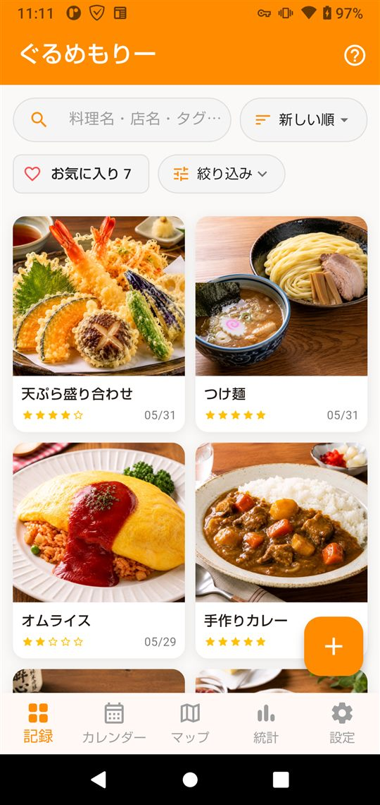
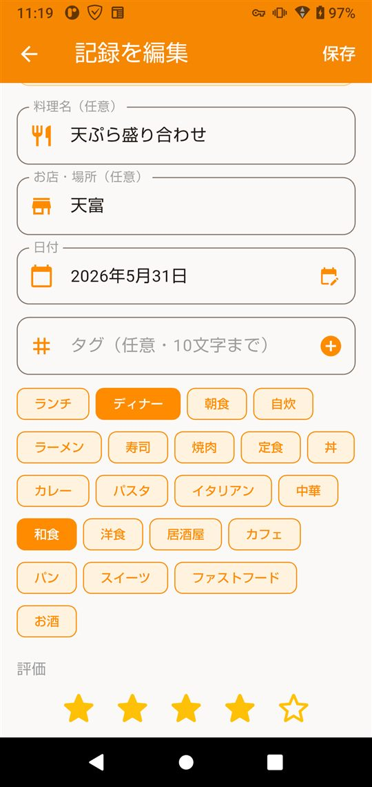
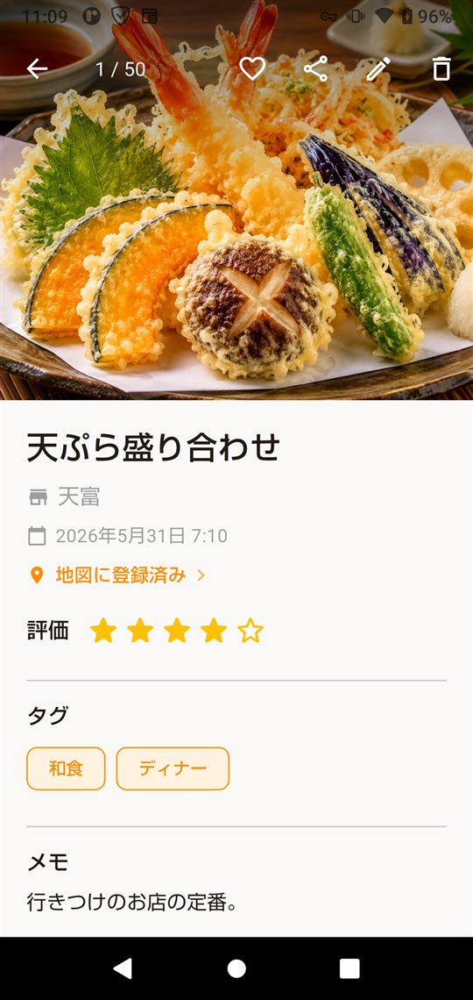
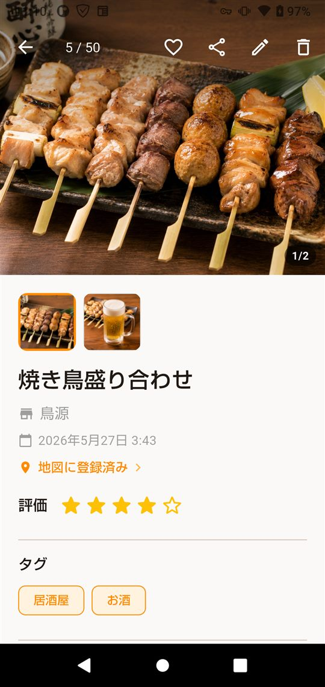
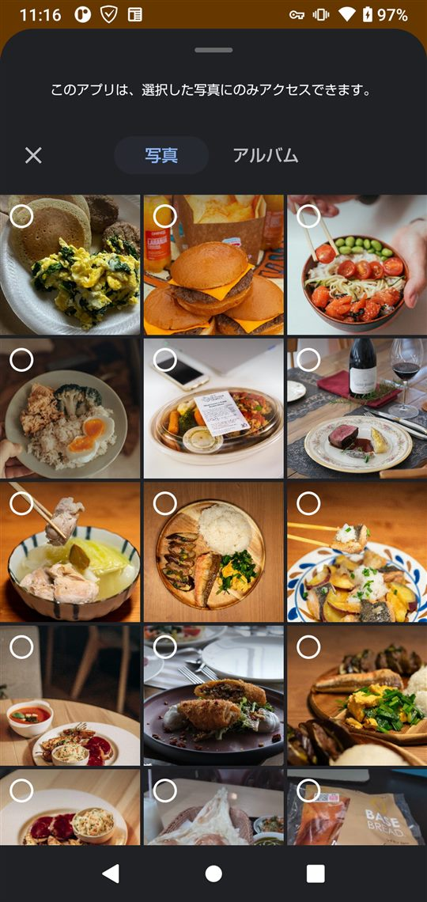
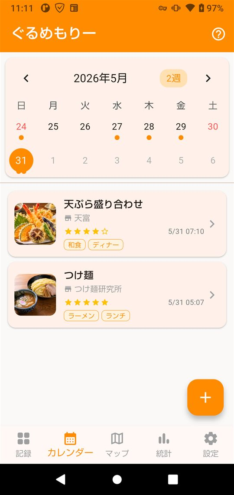
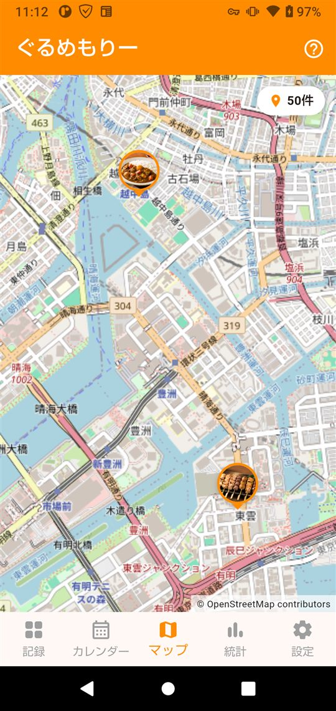
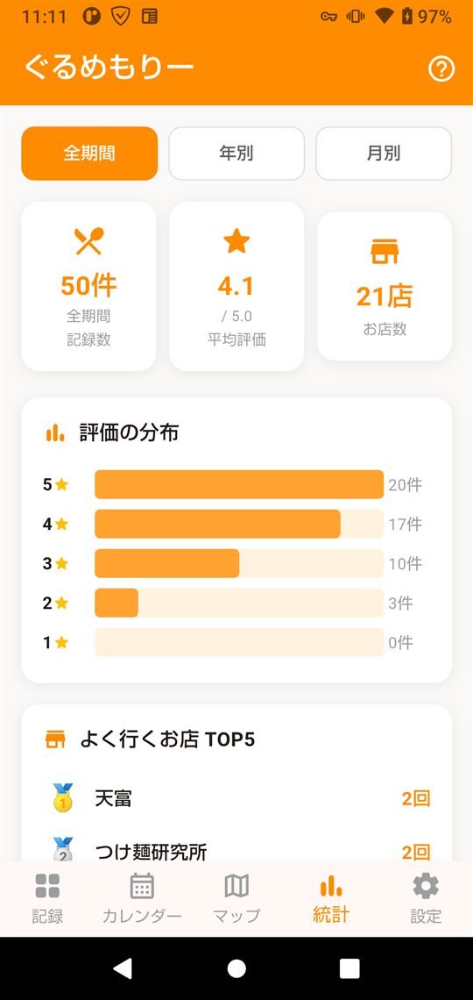

できること
- 写真で記録料理名・評価・店名・メモ・タグを、写真と一緒に残す。
- 地図にピン写真に位置情報があれば地図に表示。GPS（位置情報権限）は使いません。
- 振り返りカレンダー・検索・お気に入りで、過去の記録をかんたんに探せる。
- シェア記録をカード画像にしてSNSへ。共有画像に位置情報は載せません。
- バックアップ／復元記録をまとめてファイルに書き出し、機種変更時に取り込めます。
- 広告は買い切りで非表示に（任意）応援として一度購入すると広告が消えます。全機能は無料のまま。支払いはGoogle Playが処理し、支払い情報がアプリに渡ることはありません。
画面紹介








プライバシー
記録・写真・評価・メモ・位置は、すべて端末内にのみ保存されます。クラウド送信・同期・アカウント登録はありません。
位置情報は「写真のEXIFから読む」または「地図で手動指定」のみで、端末GPSは使いません。端末に保存する写真とシェア画像からは、位置情報（EXIF）を取り除きます。
外部との通信は、広告の表示（AdMob）と地図タイルの取得（OpenStreetMap）に限られます。あなたの食事記録そのものが外部へ送られることはありません。